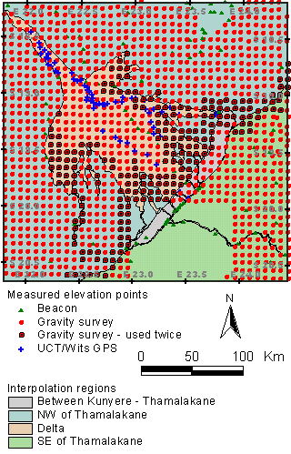

Creating the topographic
map

The map shows the
points used for creating the topographic map (Digital Elevation
Model, DEM) over the Okavango Delta. Four data sources were used:
-
Beacons from the Botswana survey,
-
Beacons from maps (Linyanti area only),
-
Points measured with Global Positioning System b(GPS) from a survey
of Gravity (Botswana), and
-
GPS measured points along the major channels.
The points
were all transformed to the same geoid and projection (S. UTM
34 with Cape Datum). The points were then interpolated to a DEM
in four regions as show in the map. The interpolation was done
with variogram fitted kriging.
Click for next page.